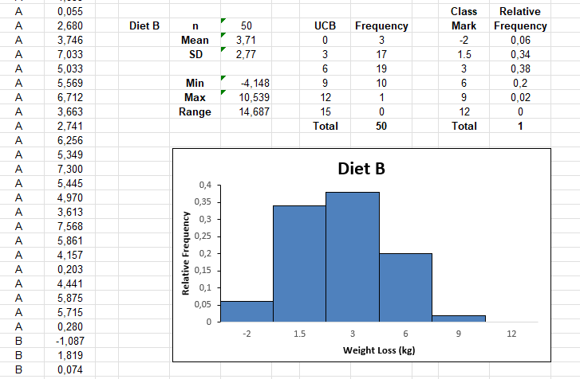

Everything surrounding the artifact and the final project
Artifact
The exercise was to consider my thoughts on the chosen area of interest for the research project.
Undertaking this exercise in unit 3 may be too soon to have a complete answers to questions.
My project could probably be a mix or exploratory and descriptive research.
I am thinking of looking into cybersecurity applied to GP doctors in Italy.
The nature of the research would lend itself to qualitative methods of research, however, the biggest issue would be the time available to carry it out such as the feasibility of conducting interviews. This is a good reason why quantitative methods along the lines of survey research would probably not fit the time frame granted for the dissertation project.
There are options to contact the Italian Association of General Practitioners and I could have access to GPs leveraging my personal network.
Final Project
This reflective activity was focused on the case of Cambridge Analytica and the 2018 scandal in which the fact that they obtained and shared the data of millions of Facebook users was uncovered and made public. The data was obtained through surveys on Facebook and it could be the highest profile case of using surveys for alternative means or profit.
The exercise was to see if there have been similar cases, which has proven difficult to carry out in terms of finding examples of inappropriate use of surveys similar to Cambridge Analytica. The main hypothesis to explain this is that companies pursuing similar activities are cautious in the way they publicise their services.
References
- CDD Center for Digital Democracy (2022) Digital Citizen. Available from: https://www.democraticmedia.org/projects/focus/digital-citizen [Accessed 21 March 2022].
- Facebook (N.D.) Terms of Service. Available from: https://www.facebook.com/terms.php [Accessed 21 March 2022].
